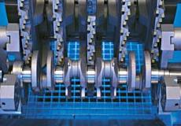
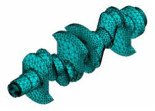

LMP>Research Guidelines>SIMUS>Estudo do Torneamento Visando o Fresamento Frontal
OBJECTIVESDesenvolvimento de uma ferramenta computacional para simular o processo de torno brochamento de virabrequins. Estudo se deu através da modelagem da cinemática, da modelagem dos esforços de usinagem e da realização de experimentos que validem os modelos elaborados. Assim, a partir deste estudo é possível avaliar a influência de parâmetros de entrada sobre o processo de formação de cavaco, erros de forma, esforços de usinagem e deflexão do virabrequim durante o processo. PROCEDURESPara a análise da influência dos parâmetros de corte sobre os resultados tecnológicos do processo de torno-brochamento, foram propostos modelos computacionais que descrevem a cinemática e os esforços de usinagem. 
Torno brochamento O modelo computacional da cinemática do processo foi baseado principalmente no movimento relativo entre a peça e a ferramenta. Este modelo serviu de base para a modelagem dos esforços de usinagem, assim como forneceu dados teóricos como o erro de forma, espessura de usinagem no decorrer do processo e a variação dos ângulos efetivos de usinagem. Posteriormente foi realizada a modelagem dos esforços de usinagem através do modelo descrito por Kienzle, sendo consideradas na modelagem da força de corte correções sugeridas na literatura. Como dados de entrada para os modelos de esforços de usinagem, têm-se os dados de saída do modelo da cinemática, dados obtidos em ensaios de torneamento e em ensaios de torno-brochamento. Os ensaios de torno-brochamento, além da finalidade citada anteriormente, permitiram a validação e a otimização dos modelos da cinemática e dos esforços de usinagem propostos. Nestes ensaios, realizados com corpos de prova cilíndricos, também foi analisada a influência da deflexão do sistema máquina-ferramenta-peça, resultante dos esforços de usinagem, sobre o desvio geométrico da peça. Após a validação dos modelos computacionais que descrevem a cinemática e os esforços de usinagem, foi determinada a rigidez do virabrequim pelo método de elementos finitos, de forma a prever resultados tecnológicos a serem obtidos em processos reais de torno-brochamento deste componente. Portanto, através dos modelos computacionais desenvolvidos, torna-se possível avaliar a influência dos parâmetros de entrada sobre certos aspectos tecnológicos resultantes do processo. Além de permitir a determinação de um domínio de valores de parâmetros de entrada mais adequado, o diagnóstico de possíveis problemas no processo e evitar riscos à integridade da máquina-ferramenta decorrentes de uma mudança intuitiva dos parâmetros de entrada.
 Malha do virabrequim gerada CONCLUSÕESA modelagem cinemática e dinâmica do torno-brochamento permitiu maior entendimento do processo e seus parâmetros como velocidade de corte, ângulos de montagem, velocidade de avanço assim como a rigidez equivalente do sistema máquina-ferramenta-peça sobre resultados tecnológicos tais como erro de forma, forças de usinagem, deflexão do sistema e variação dos ângulos efetivos de corte. A ferramenta computacional desenvolvida mostrou bastante equivalência entre os dados experimentais e os simulados, podendo servir também como base para outros tipos de ferramenta de corte utilizados no processo de torno-brochamento, sendo necessária para esta mudança a definição do perfil da ferramenta no programa. |
| Contact:
SIMUS Rolf Bertrand Schroeter Prof. Dr. Eng. |
Last update 23.06.2006 |